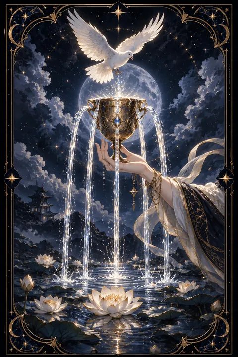

컵 에이스 카드 — 새로운 사랑과 감정의 시작
컵 에이스 카드 한눈에 보기
컵 에이스 카드 상징 읽기

동네보살의 카드 그림은 전통 라이더–웨이트 덱의 뜻을 새 그림으로 옮긴 것입니다. 아래 상징 설명은 전통 덱의 그림을 기준으로 합니다.
구름 사이에서 뻗어 나온 손이 금빛 잔을 받쳐 들고 있습니다. 이 손은 스스로 얻어 낸 것이 아니라 위에서 선물처럼 주어지는 기회와 감정을 뜻합니다.
잔에서는 다섯 갈래의 물줄기가 흘러넘쳐 아래 연못으로 떨어집니다. 다섯 줄기는 오감을 가리키며 마음이 가득 차 몸 전체로 흘러넘치는 상태를 보여 줍니다. 잔 표면에 새겨진 글자는 신성한 그릇이라는 표시로 풀이되곤 합니다.
흰 비둘기가 둥근 제병을 물고 잔 속으로 내려오는 장면은 평화와 순수한 사랑이 마음에 깃드는 순간을 상징합니다. 연못 위의 연꽃은 흙탕물 속에서도 맑게 피어나는 마음, 곧 감정이 정화되어 새롭게 깨어나는 모습입니다. 물은 컵 수트의 원소로서 감정과 직관과 관계를 다스립니다. 다섯 물줄기가 끊이지 않는 모습은 사랑이 마를 틈 없이 계속 샘솟는다는 뜻입니다.
컵 에이스 카드 정방향 뜻
정방향 컵 에이스는 마음의 샘이 새로 터지는 출발점입니다. 새로운 연애, 깊어지는 우정, 가족을 향한 애틋함처럼 감정이 크게 움직이는 일이 시작되는 때입니다. 억지로 붙잡지 않아도 좋은 감정이 저절로 흘러들어 오는 흐름이라 마음을 여는 것만으로 충분합니다.
이 카드는 사랑받는 것과 사랑하는 것이 같은 물줄기라는 점을 알려 줍니다. 스스로를 따뜻하게 대할수록 다른 사람에게 건넬 여유도 커집니다. 직관이 맑아지는 시기여서 첫인상이나 예감이 잘 맞는 편이니 마음이 보내는 신호를 흘려듣지 마세요.
창작이나 봉사처럼 감정을 담아 하는 일도 잘 풀립니다. 고마운 사람에게 짧은 메시지를 보내거나 미뤄 둔 칭찬을 전하는 작은 행동이 새로운 인연의 문을 열어 줍니다. 넘치는 잔은 나눌수록 다시 채워진다는 것을 기억해 두세요.
컵 에이스 카드 역방향 뜻
역방향 컵 에이스는 잔이 뒤집혀 감정이 제자리를 찾지 못하는 모습입니다. 서운함이나 슬픔을 드러내지 못하고 속에 눌러 담다 보니 마음이 메마르고 무엇을 해도 기쁘지 않은 상태일 수 있습니다.
남을 챙기느라 정작 자신의 마음은 돌보지 못한 경우에도 이 카드가 자주 나옵니다. 누군가 다가와도 상처받을까 봐 먼저 벽을 세우거나 호의를 의심하게 되기도 합니다. 새로 시작하려던 관계나 계획이 잠시 미뤄지는 흐름도 담겨 있습니다.
그렇다고 사랑할 힘이 사라진 것은 아닙니다. 잔은 다시 세우면 다시 채울 수 있습니다. 감정을 글로 적어 보거나 믿을 만한 사람에게 털어놓는 것처럼 막힌 물길을 조금씩 여는 일이 먼저입니다. 스스로에게 다정한 말을 건네는 연습을 하다 보면 비어 있던 자리에 따뜻함이 다시 고입니다.
연애에서 컵 에이스 카드
솔로라면 설렘이 찾아오는 시기입니다. 새로운 만남에서 마음이 먼저 반응하는 사람이 나타날 수 있으니 조건을 따지기 전에 대화를 즐겨 보세요. 호감이 생기면 가볍게 표현하는 것이 좋고 상대도 그 진심을 알아차리기 쉬운 때입니다.
연인이 있다면 두 사람 사이가 한층 도타워지는 때입니다. 고백, 기념일, 함께 사는 이야기처럼 마음을 확인하는 일이 생길 수 있습니다. 평소 쑥스러워 못 했던 애정 표현을 꺼내 보면 상대의 반응도 따뜻하게 돌아옵니다.
역방향이라면 사랑을 주고받는 통로가 잠시 막힌 상태입니다. 상대에게 서운한 점을 쌓아 두지 말고 부드러운 말로 전해 보세요. 사랑받고 싶은 마음이 클수록 먼저 스스로를 아껴 주는 시간이 필요합니다. 혼자인 시간에도 스스로를 아끼는 습관을 들이면 좋은 인연을 알아보는 눈이 밝아집니다.
재회·속마음 질문에서 컵 에이스 카드
재회를 묻는 자리에서 컵 에이스가 나오면 두 사람 사이에 새 물길이 열릴 여지가 있다는 뜻입니다. 지난 관계를 그대로 되살리기보다 처음 만난 사람처럼 새롭게 시작하는 쪽에 가능성이 실립니다. 상대도 그리운 마음을 품고 있을 수 있으나 먼저 드러내기를 망설이는 상태로 보입니다. 원망을 앞세우지 말고 안부처럼 가벼운 인사로 문을 두드려 보세요. 역방향이라면 아직 감정이 정리되지 않았으니 서두르지 말고 자신의 마음부터 돌보는 시간이 필요합니다. 상대의 반응이 느리더라도 재촉하지 말고 따뜻한 마음을 꾸준히 보여 주는 편이 좋습니다. 진심이 담긴 짧은 말 한마디가 긴 설명보다 멀리 닿습니다.
일·금전에서 컵 에이스 카드
일에서는 새로운 시작이 마음을 설레게 하는 카드입니다. 새 프로젝트, 새 팀, 새 직장처럼 처음 맡는 일에 애정이 생기고 그 애정이 좋은 결과로 이어지기 쉽습니다. 상담, 교육, 돌봄, 창작처럼 사람의 마음을 다루는 분야에서 특히 힘을 냅니다.
금전 면에서는 좋아하는 일이 작은 수입으로 연결되는 흐름이 보입니다. 선물이나 뜻밖의 도움이 들어오기도 합니다. 다만 기분에 따라 쓰는 돈이 늘 수 있으니 감정이 크게 흔들리는 날에는 결제를 하루 미뤄 두는 습관이 도움이 됩니다. 새로 배우고 싶은 분야가 생겼다면 작은 강좌부터 등록해 보는 것도 좋습니다. 마음이 끌리는 곳에 들인 시간은 나중에 뜻밖의 기회로 돌아옵니다.
컵 에이스 카드는 예일까 아니오일까
하늘이 건네는 잔에서 물이 넘쳐흐르는 카드라 마음이 통하고 좋은 일이 시작된다는 뜻이라 예로 풉니다. 뒤집혀 나왔다면 감정이 막혀 있는 상태라 마음을 먼저 풀어야 답이 열립니다.
자주 묻는 질문
컵 에이스 카드 역방향은 나쁜 뜻인가요?
역방향 컵 에이스는 잔이 뒤집혀 감정이 제자리를 찾지 못하는 모습입니다. 서운함이나 슬픔을 드러내지 못하고 속에 눌러 담다 보니 마음이 메마르고 무엇을 해도 기쁘지 않은 상태일 수 있습니다.
컵 에이스 카드가 연애 질문에 나오면요?
솔로라면 설렘이 찾아오는 시기입니다. 새로운 만남에서 마음이 먼저 반응하는 사람이 나타날 수 있으니 조건을 따지기 전에 대화를 즐겨 보세요. 호감이 생기면 가볍게 표현하는 것이 좋고 상대도 그 진심을 알아차리기 쉬운 때입니다.
타로 카드는 어떻게 뽑나요?
타로 카드 페이지에서 78장을 섞으면 그중 22장이 펼쳐집니다. 마음이 가는 세 장을 고르면 과거·현재·미래 자리에 놓이고, 한 장씩 뒤집어 자리와 방향에 맞는 풀이를 읽습니다. 정방향과 역방향은 섞는 순간 정해집니다.